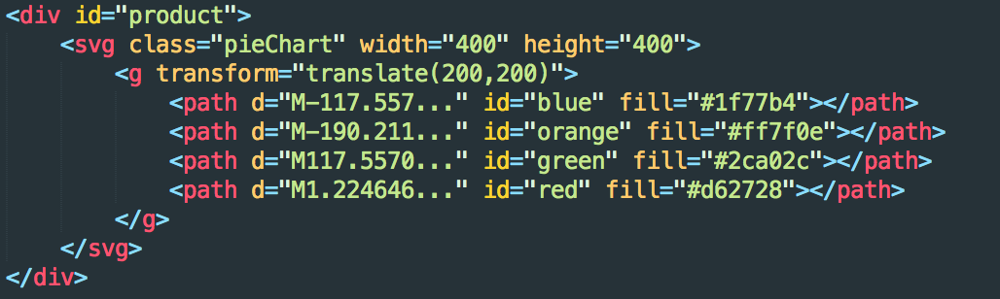
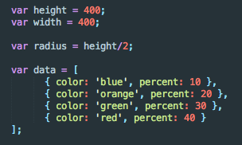
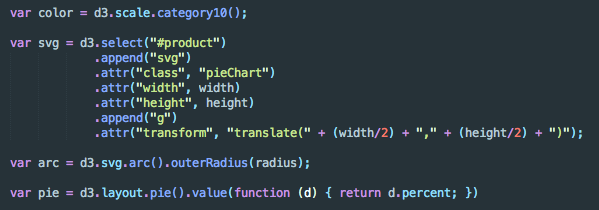
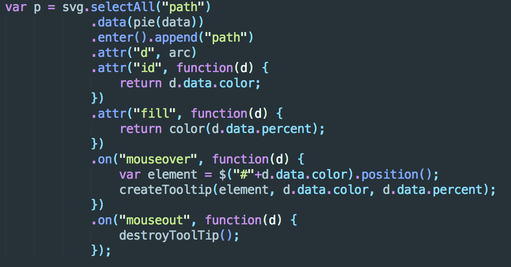

D3.js is a beautiful Javascript library to produce dynamic, interactive data visualizations in web browsers. You can read more about D3 here. This post is a tutorial to build a very siple piechart. Of course, a barchart is more practical in many cases but the creator of D3 Mike Bostock already made a bar chart tutorial here, so I'm writing a tutorial on how to make a piechart. I'm going to assume you have some beginner knowledge about HTML and Javascript. If you don't, please read up on those now!
What Are We Making?
This is what we'll end up with after this tutorial. As you can see, it's super simple. Hover over the pie slices!The HTML
Inspecting the HTML of this graph, it actually looks fairly simple.  If it weren't for the path elements with complicated d attributes, you could definitely just hardcode this HTML. D3 does all the d attribute value calculations for you, and nn a practical sense when working with larger non dummy datasets, writing this by hand seems less and less viable.Step 1: Setting up the Graph
Let's start by defining some dimensions and some data for our piechart.
This is fairly self explanatory. The width and height of our graph are both 400px, and since it's a circle, we define a radius. The data is a simple array of objects with a color and percentage property. You'll see how we access and use this data later on.
Step 2: Creating the Graph
The variable color is just a color scale provided by D3. You can read about ordinal scales here.
The arc variable is how we define the radius using D3's svg.arc() function as well as the outerRadius() method using the radius we established earlier.
For the start and end angles of the segments, we use D3's layout.pie() function. We define how to get the right properties from the data using the value method and percentage property.
We also create the svg and g elements that create the whole piechart. Using D3's select method we grab the DOM element with id product. We then add an svg element to the product div we've just selected and due to method chaining, we now have a reference to the svg element. We set its width and height to be the width and height that we defined before, and then finally append a g element.
Step 3: Filling the Graph: Final Steps
First, we select all path elements inside our g element. Right now, there are none but we will create them. The .data() method is how we pass in our predefined data and how we associate every slice of the pie (path elements) with the appropriate data. We pass this into our pie function above which grabs the values. The .enter() method creates placeholders for every value in our data, and then we use .append() to replace them with the correct path elements. We define the d attribute using the arc function defined above and then using our color scale, we fill each slice of the pie. When we hover (or mouseover) the elements, a tooltip will pop up and when we remove our mouse the tooltip will disappear.
Where Do I Go From Here?
D3 is a very vast library, and although we created a pie chart here there's a lot more that D3 can do. In the real world, you'll probably have to load and parse through some data and also run a lot more algorithms for meaningful analysis and display. This tutorial really only went over the barebones of D3 and just glossed over what it can do. This is the code to generate the pie chart we created above.
Luckily, there are plenty of resources to learn D3.
Scott Murray’s Interactive Data Visualization for the Web
Scott Murray's D3 Tutorials
DashingD3 tutorial
Scott Murray’s Interactive Data Visualization for the Web
Scott Murray's D3 Tutorials
DashingD3 tutorial
The documentation for D3 is also very well written. Stackoverflow is also your best friend. D3 has this thing called blocks, where other users in the community post demos/examples with all the code required for the display.
I hope this tutorial helped you learn a bit about how to use D3 and you're now on your way to creating some amazing graphics!